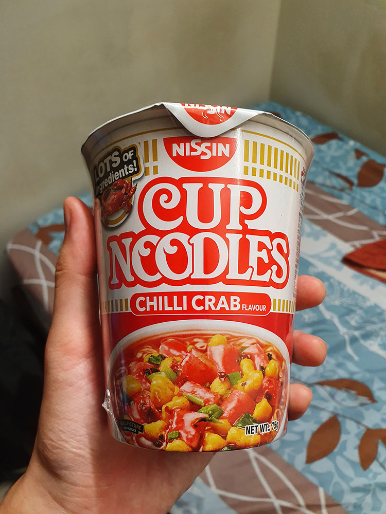

I love cup noodles. So our residential college is having Angels & Mortals, and my Angel gave me this!
Disclaimer
I actually have moderate deuteranopia - which is a predominantly red-green colour deficiency. So pardon me if I identify some colours a little wrongly.
Kowalski: Analysis
On this cup noodles packaging I've picked out 5 hues: white, light red, dark red, yellow, and black.
First, the red and orange colours represent the spicy chilli crab gravy in the noodles - reinforcing the representation of flavour (imagine if it were blue - that wouldn't make sense). Also, the colours red, orange, and yellow - colours that complement each other on the analogous colour scheme (whereby the red dominates) - are not only pleasing to the eye but also help to boost the appetite of the consumer when seeing the packaging because of the nature of these colours. These colours are hence also commonly seen in fast food.
It's cool to notice that this appetising complementary colour scheme is not only applied on the packaging, but when deciding what ingredients to add into the food as well! In fact, the colours made me so hungry I am actually eating the cup noodles as I type this. Yum.
The black is used as the outline of the white text "LOTS OF ingredients!" to add stark contrast and allow the text to stand out more, pulling people's attention towards the fact that there are a lot of ingredients. This was effective since it was indeed the first thing I noticed when seeing the packaging.
"Give a man a fish, and he eats for a day.Teach a man to fish, and he gets caught at MacRitchie reservoir for illegal fishing."